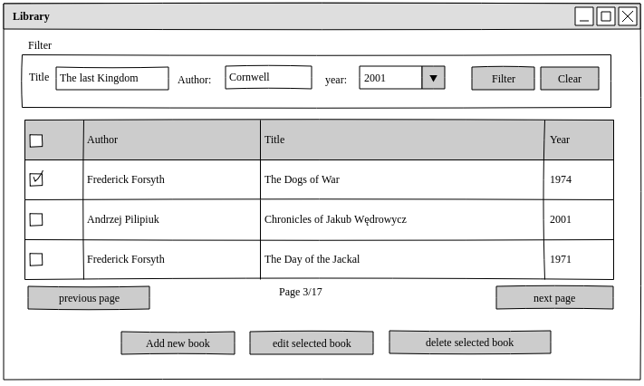

Library in Qt
- Please write simple Library application using Qt (under linux)
- Dialog Layout for Adding and Editing dialog box should be done in designer (using *.ui file)
- Task should be presented on Desktop PC in the Lab
Main screen (to be done first)
- In that phase application simply present data which it read from the text file (Student himself should define format of this file)
- According to filter on the top of the list only part of the books should be presented

Add/Edit dialog (dialog should be created using a designer)
- double-click on the item in the list should raise second window (modal dialog) which allows editing of the item
- pressing save writes result to the disk and returns to the list (filter should be preserved)
- pressing add button on the bottom on the list should raise the same modal window, but instead of 'save' it should have 'add' button
Return